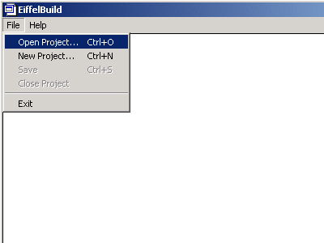

When a project is not open in Build, there are only two menus available, 'File' and 'Help'. To retrieve an existing project, select 'file', 'Open Project

A directory dialog will be displayed from which you can select the Build project file that you wish to retrieve. All build project files are named 'build_project.bpr' and are qualified by the directory in which they reside.
See Also
Creating a new project